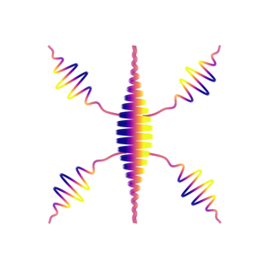

Getting started
examples/
tests/inputs/
Model and discretisation
Solvers
Output and analysis
dipoles
energies
currents
populations
autocorrelation
td/surff_<input>.h5
Internals and operation
Please activate JavaScript to enable the search functionality.